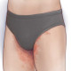

Tinea cruris
Rx
1.Cream clotrimazole 1% N=1 q12h
Or Cream Miconazole 2%
2.Cap Itraconazole 200mg N=7 daily
3.Solution Burrows N=1 q8h
نکته: بصورت پلاک های قرمز خارش دار با حدود مشخص دیده میشود.
نکته:بیشتر درمناطق گرمسیری و درسربازان شایع است
نکته: توصیه به نپوشیدن لباس تنگ ، خشک نگه داشتن محل؛
نکته: برای درمان بهتر توصیه میشه درکنار موضعی نوع خوراکی هم تجویز کنید.
نکته: درصورت منتشر بودن بیماری یا طول کشیده، بصورت سیستمیک از داروی خوراکی ایتراکونازول یا گریزوفولوین به مدت ۱ ماه استفاده کنید
1️⃣ آکانتوزیس نیگریکانس
2️⃣ درماتیت تماسی
3️⃣ کاندیدیازیس جلدی
4️⃣ اریتراسما
5️⃣ فولیکولیت
6️⃣ درماتیت سبوره
7️⃣ پسوریازیس
8️⃣ تینه آ ورسیکالر